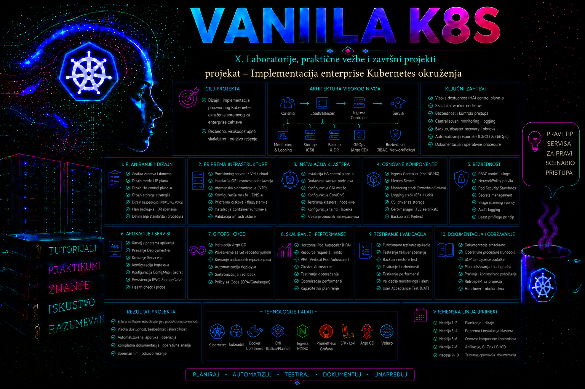

Vanilla Kubernetes

Ovaj mini projekat objedinjuje arhitekturu klastera, bezbednost, upravljanje resursima, mrežnu izolaciju, skladištenje konfiguracije, kontrolisano puštanje verzija, skaliranje, monitoring, backup i operativnu dokumentaciju u jednu povezanu administratorsku celinu. Cilj nije samo da aplikacija bude pokrenuta, već da nastane okruženje koje može da se proverava, održava, menja i oporavlja prema unapred definisanim pravilima. Enterprise Kubernetes okruženje ne određuje jedna posebna distribucija niti broj instaliranih dodataka. Njegove osnovne karakteristike jesu otpornost arhitekture, ponovljivost konfiguracije, najmanja potrebna ovlašćenja, ograničenje uticaja greške, merljiva dostupnost i dokaziv postupak oporavka.
Referentni scenario koristi vanilla Kubernetes klaster formiran pomoću alata kubeadm, sa tri control plane čvora, tri worker čvora i stabilnom virtuelnom adresom API servera. Na njemu se implementira interna aplikacija asset-portal u namespace-u enterprise-apps. Aplikacija predstavlja pojednostavljeni portal za pregled inventara IT opreme, ali su prikazani obrasci primenljivi i na druge stateless web servise. Projekat pretpostavlja da su operativni sistem, container runtime, CNI dodatak, DNS, vremenska sinhronizacija i pristup privatnom registry-ju već pripremljeni u laboratoriji iz prethodnog dodatka.
Ovaj dodatak zato ne ponavlja instalaciju hostova, runtime-a, kubeadm paketa i CNI-ja iz Dodatka 1. Njegova ulazna kontrolna tačka jeste već funkcionalan klaster. Ako bilo koja početna provera u ovom projektu ne uspe, prvo se vraća na odgovarajuću fazu Dodatka 1; aplikacioni manifesti ne smeju se koristiti kao način da se prikrije kvar platforme. Referentna verzija pri uređivanju je Kubernetes v1.36. Za drugu minor verziju čitalac mora otvoriti dokumentaciju baš te verzije i proveriti API-je, Pod Security pravila, kubectl klijent i verzije dodataka pre primene.
Mapa integrisanog projekta
| Faza | Mesto i identitet | Promena | Dokaz uspeha |
|---|---|---|---|
| 0. Ulazna kontrola | Administratorska stanica; ovlašćeni administrator | Nema promene, samo prikupljanje dokaza | API, čvorovi, sistemski Podovi, CNI, DNS i Metrics API zdravi |
| 1. Projektne granice | Administratorska stanica; cluster-admin | Namespace, Pod Security oznake, kvota i LimitRange | Sačuvane oznake i očekivane hard/default vrednosti |
| 2. Identitet i mreža | Administratorska stanica; cluster-admin | ServiceAccount, RoleBinding i NetworkPolicy objekti | Pozitivni i negativni RBAC i mrežni testovi |
| 3. Workload | Administratorska stanica; namespace operator | ConfigMap, Deployment, Service i PDB | Tri Available replike, EndpointSlice i uspešna HTTP provera |
| 4. Elastičnost i promena | Administratorska stanica; namespace operator | HPA, kontrolisani rollout i rollback | Numeričke metrike, stabilan rollout i potvrđen povratak |
| 5. Održavanje i kvarovi | Administratorska stanica i izabrani čvor; administrator | Reverzibilan drain i ograničene simulacije grešaka | SLO ostaje ispunjen, uz dokumentovan uzrok i oporavak |
| 6. Dokazi i oporavak | Control plane i repozitorijum dokaza; posebno ovlašćen nalog | Snapshot, checksum, inventar i završni zapis | Proveren snapshot i nezavisno potvrđen restore postupak |
Referentna topologija i projektne promenljive
| Komponenta | Referentna vrednost | Uloga i ograničenje |
|---|---|---|
| Administratorska stanica | admin.lab.example, 192.168.50.10 | kubectl, Git i kontrolisani kubeconfig; nije čvor klastera |
| API endpoint | k8s-api.lab.example:6443, VIP 192.168.50.20 | Stabilan TCP endpoint iza load balancer-a; nije Service IP |
| Control plane | k8s-cp-01–03, 192.168.50.21–23 | Tri stacked etcd člana i control plane komponente |
| Worker čvorovi | k8s-worker-01–03, 192.168.50.31–33 | Aplikacioni workload; najmanje 4 vCPU, 8 GiB RAM i 60 GiB diska po čvoru za ovu vežbu |
| Host mreža / Node IP | 192.168.50.0/24, interfejs ens192 | VM ili fizička mreža; mora rutirati između svih čvorova i LB-a |
| Pod CIDR | 10.244.0.0/16 | Dodeljuje ga CNI; ne sme se preklapati sa host, VPN, Service ili spoljnom mrežom |
| Service CIDR | 10.96.0.0/12 | Virtuelne ClusterIP adrese; nije opseg čvorova ni load balancer-a |
| LoadBalancer pool | 192.168.50.200/28 | Opcioni laboratorijski pool; ne koristi se za API VIP niti DHCP |
| DNS | lab.example; cluster domain cluster.local | Host DNS i Kubernetes DNS su različiti slojevi razrešavanja |
| Platforma | Linux sa systemd-om; containerd; CNI sa NetworkPolicy podrškom | Runtime i CNI verzije moraju biti podržane za izabrani Kubernetes minor |
Navedeni opsezi se međusobno ne preklapaju. Preuzimanje istog CIDR-a za Podove i kućni, poslovni ili VPN opseg može proizvesti pogrešne rute, nedostupne spoljne adrese i nepredvidiv NAT. Preklapanje Service CIDR-a sa host mrežom može usmeriti saobraćaj ka pogrešnom odredištu. Promena Pod ili Service CIDR-a nakon izgradnje klastera nije obična aplikaciona izmena i ne izvodi se u ovom projektu.
| Promenljiva | Vrednost u projektu | Prilagoditi kada |
|---|---|---|
KUBERNETES_MINOR | v1.36 | Klaster radi na drugoj podržanoj minor verziji |
PROJECT_NAMESPACE | enterprise-apps | Organizacioni standard zahteva drugo ime |
APP_NAME | asset-portal | Koristi se stvarna interna aplikacija |
APP_IMAGE_V1 | registry.lab.example/platform/asset-portal:1.0.0 | Registry, repozitorijum, tag ili digest se razlikuju |
APP_IMAGE_V2 | registry.lab.example/platform/asset-portal:1.1.0 | Testira se druga odobrena verzija |
WORKER_MAINTENANCE | k8s-worker-01 | Pre provere se utvrdi drugi bezbedan kandidat za drain |
Tabela je izvor vrednosti; primeri ispod namerno koriste konkretne vrednosti da komande ostanu čitljive. Ako se vrednosti prenesu u shell promenljive, one važe samo u toj shell sesiji. Pre upotrebe proveravaju se, na primer komandom printf '%s\n' "$PROJECT_NAMESPACE". Prazna promenljiva ne sme se proslediti komandama delete, drain, reset ili komandama koje menjaju firewall i datotečni sistem.
Pravila izvršavanja i evidencije
- Administratorska stanica: sve komande
kubectli kreiranje manifesta izvršavaju se kao imenovani korisnik sa zaštićenim kubeconfig-om.sudose koristi samo za pripremu lokalnog projektnog direktorijuma. - Control plane čvor:
etcdctl,etcdutl,journalctli čitanje PKI materijala zahtevaju posebno odobren administratorski nalog isudo. Privatni ključevi se ne kopiraju u Git niti u izveštaj. - Worker čvor: lokalni
journalctl,systemctlicrictlkoriste se samo kada API dokaz upućuje na konkretan čvor. Prvo se čita stanje; servis se ne restartuje bez potvrđene hipoteze i procene uticaja. - Read-only i state-changing:
get,describe,logs,auth can-ii većinajournalctlupita čitaju stanje.apply,set image,rollout undo,cordon,drain,uncordoni restore menjaju stanje i moraju imati neposrednu validaciju.
Projektni zahtev i kriterijumi enterprise spremnosti
Poslovni zahtev glasi: aplikacija mora biti dostupna zaposlenima tokom održavanja pojedinačnog worker čvora, ne sme nekontrolisano da troši resurse, ne sme da komunicira sa drugim namespace-ovima osim kada je to izričito dozvoljeno, a svaka promena mora moći da se proveri i vrati. Administrator zato ne počinje od YAML manifesta, već od kriterijuma prihvatanja. Bez njih stanje „Pod je Running” lako se pogrešno proglašava uspešnom implementacijom.
| Oblast | Zahtev | Dokaz prihvatanja |
|---|---|---|
| Dostupnost | Najmanje dve zdrave instance aplikacije na različitim worker čvorovima | kubectl get pods -o wide prikazuje najmanje dva Ready Poda na različitim čvorovima |
| Bezbednost | Primena Pod Security standarda restricted i nekorenski proces |
Dozvoljeni manifest prolazi, a privilegovani testni Pod biva odbijen |
| Resursi | Definisani requests, limits, LimitRange i ResourceQuota | Namespace ne prihvata nekontrolisano kreiranje resursa preko kvote |
| Mreža | Podrazumevana zabrana saobraćaja uz eksplicitno dozvoljen DNS i pristup aplikaciji | Dozvoljena komunikacija uspeva, nedozvoljena se prekida |
| Promene | Rolling update bez prekida i moguć rollback | Rollout završava uspešno, istorija revizija postoji, prethodna verzija može da se vrati |
| Oporavak | Postoji proverljiv backup etcd-a i deklarativnih manifesta | Snapshot prolazi proveru integriteta, a probni restore se dokumentuje |
Referentna arhitektura
Control plane čvorovi k8s-cp-01, k8s-cp-02 i k8s-cp-03 rade iza TCP load balancer-a na adresi k8s-api.lab.example:6443. Svaki control plane čvor sadrži lokalnog člana stacked etcd klastera. Ova topologija je jednostavnija od odvojenog external etcd klastera, ali kvar control plane čvora istovremeno uklanja i jedan etcd član. Zbog toga su potrebna najmanje tri člana, pouzdani diskovi, mala mrežna latencija i redovan backup. Dva control plane čvora nisu dobro rešenje jer gubitak jednog ne ostavlja većinu potrebnu za konsenzus.
Worker čvorovi nose oznaku node-role.kubernetes.io/worker=, dok se aplikacioni workload dodatno raspoređuje pomoću topology spread ograničenja. Sam Deployment sa tri replike ne garantuje da će replike završiti na različitim čvorovima. Scheduler može više Podova smestiti na isti čvor kada ne postoje odgovarajuća pravila, pa bi kvar tog čvora uklonio više instanci odjednom.
Kubernetes pruža orkestraciju, ali ne zamenjuje spoljne infrastrukturne funkcije. Za enterprise rad i dalje su potrebni DNS, NTP, PKI, load balancer, registry, centralizovani logovi, monitoring, skladišna klasa i proces upravljanja promenama. Kubernetes takođe ne pravi automatski aplikaciono konzistentan backup podataka u persistent volume-u. Za stateful sisteme moraju se kombinovati CSI snapshot mogućnosti, backup alat i procedure specifične za bazu podataka.
Preduslovi, verzije i ovlašćenja
Sve komponente klastera moraju pripadati podržanoj kombinaciji verzija. Referentni API i Pod Security pravila u ovom projektu provereni su prema Kubernetes v1.36; to nije dozvola da se postojeći klaster nadogradi samo radi vežbe. kubeadm, kubelet i control plane ne nadograđuju se proizvoljnim redosledom, već prema zvaničnoj politici odstupanja verzija i dokumentovanom upgrade putu. PodSecurityPolicy objekti se ne koriste, jer su uklonjeni iz Kubernetes API-ja od verzije 1.25; ugrađeni Pod Security Admission je stabilan od iste verzije.
- Klaster ima funkcionalan CNI dodatak koji zaista sprovodi Kubernetes
NetworkPolicy. Kreiranje policy objekta bez podrške CNI-ja ne obezbeđuje izolaciju. - Instaliran je Metrics Server ili drugi kompatibilan izvor Resource Metrics API-ja ako se koristi HorizontalPodAutoscaler.
- Privatni registry
registry.lab.examplesadrži potpisanu i skeniranu slikuplatform/asset-portal:1.0.0. - Administrator ima cluster-admin pristup samo za cluster-scope pripremu. Aplikacioni operator dobija namespace-scope prava putem posebnog RoleBinding-a.
- Radni direktorijum je
/srv/k8s-project/asset-portal, nalazi se pod kontrolom verzija i ne sadrži tajne u otvorenom obliku.
Pre promene mora postojati odobren zahtev sa obimom, vlasnikom, terminom, planom validacije i rollback postupkom. Cluster-admin kubeconfig ne treba kopirati na korisničke radne stanice bez kontrole. Za svakodnevni rad koriste se individualni identiteti preko spoljnog identity provider-a ili kratkotrajni sertifikati i tokeni, uz audit zapis koji povezuje akciju sa konkretnom osobom. Privatni registry mora pre početka potvrditi postojanje obe slike, mogućnost povlačenja sa worker čvorova i, gde je primenljivo, njihov digest i potpis; adrese u ovom projektu su referentne i moraju se zameniti stvarnim internim artefaktima.
Početna procena postojećeg klastera
Implementacija ne počinje dok osnovno stanje nije poznato. Administrator prvo potvrđuje API endpoint, identitet trenutnog naloga, stanje čvorova, sistemskih Podova, storage klasa, mrežnih dodataka i Resource Metrics API-ja. Jednokratna uspešna komanda nije dovoljan dokaz zdravlja; potrebno je proveriti događaje, restartovanja i raspoloživost kroz vreme.
Mesto izvršavanja: administratorska stanica; imenovani administrator. Uticaj: samo čitanje stanja. Rezultati se čuvaju uz change zapis pre prve promene.
kubectl config current-context
kubectl auth whoami
kubectl version
kubectl cluster-info
kubectl get nodes -o wide
kubectl get pods -n kube-system -o wide
kubectl get storageclass
kubectl get --raw /readyz?verbose
kubectl get --raw /apis/metrics.k8s.io/v1beta1/nodes
kubectl get events -A --sort-by=.metadata.creationTimestamp | tail -n 40
Prihvatljivo početno stanje podrazumeva da sva očekivana tri control plane i tri worker čvora imaju status Ready, da API provere vraćaju uspeh, da CoreDNS i CNI Podovi nemaju ponavljana restartovanja i da metrics API vraća listu čvorova. Status Ready uz veliki broj restartovanja, pritisak na disk ili učestale Unreachable događaje nije zdravo stanje. Takav simptom se prvo stabilizuje, a tek zatim se uvodi novi workload.
Kratak obrazac prihvatljivog dokaza izgleda ovako; stvarna imena, starost i verzije zavise od laboratorije:
NAME STATUS ROLES VERSION
k8s-cp-01 Ready control-plane v1.36.x
k8s-cp-02 Ready control-plane v1.36.x
k8s-cp-03 Ready control-plane v1.36.x
k8s-worker-01 Ready worker v1.36.x
k8s-worker-02 Ready worker v1.36.x
k8s-worker-03 Ready worker v1.36.xProjektovanje bezbednosnih i operativnih granica
Namespace je prva administrativna granica projekta, ali nije potpuna bezbednosna granica kao zasebna virtuelna mašina. U njemu se objedinjeno primenjuju RBAC, kvote, podrazumevani resursi, Pod Security oznake i mrežne politike. Nazivi i labels moraju omogućiti inventar, selekciju, obračun troškova i povezivanje sa CMDB sistemom. U ovom projektu svi objekti nose oznake app.kubernetes.io/name, app.kubernetes.io/part-of, environment, owner i cmdb-id.
Pod Security Admission na namespace nivou koristi režime enforce, audit i warn. Za novi namespace primenjuje se restricted u sva tri režima. U postojećem okruženju bez prethodne analize sigurnije je prvo uključiti audit i warn, pregledati neusaglašene workload-e, pa tek zatim uključiti enforce. Naglo nametanje pravila može sprečiti rollout sistemski važnih ili zastarelih aplikacija.
NetworkPolicy radi po principu selekcije Podova i dozvoljavanja saobraćaja. Default-deny politika nema smisla bez eksplicitnih pravila za DNS, ingress i potrebne izlazne servise. Posebno se proverava smer saobraćaja: ingress pravilo ne rešava egress, a Service objekat sam po sebi ne zaobilazi mrežnu politiku. DNS se dozvoljava prema CoreDNS Podovima u namespace-u kube-system, na UDP i TCP portu 53.
Integrisani praktikum – implementacija aplikacionog okruženja
Poslovni i tehnički kontekst. Tim za upravljanje IT imovinom dobija internu web aplikaciju asset-portal. Platform tim priprema bezbedan namespace, servisni identitet, kvote, mrežnu izolaciju, tri replike, provere zdravlja, kontrolisano skaliranje i prekid rada najviše jedne replike tokom dobrovoljnog održavanja. Slika ne zahteva persistent volume; podaci se čitaju iz spoljne usluge koja u ovom laboratorijskom projektu nije aktivirana, pa se egress aplikacije ograničava na DNS.
Potrebna prava. Koraci 1–4 zahtevaju cluster-admin zato što kreiraju namespace i početni RBAC. Nakon toga manifestima u namespace-u upravlja nalog app-operator, vezan za ugrađenu ulogu admin samo u namespace-u enterprise-apps. U produkciji je poželjna uža prilagođena Role umesto široke namespace admin uloge, ali je ovde ona korišćena da projekat ostane pregledan.
-
Napraviti kontrolisani radni direktorijum i zabeležiti početno stanje.
Direktorijum se kreira pre svih fajlova, a snimak stanja služi kao dokaz pre promene i osnova za poređenje.
Validacija: fajlovi moraju postojati i sadržati očekivane čvorove. Prazan izlaz ili greška autentikacije zaustavljaju promenu.sudo install -d -m 0750 -o "$USER" -g "$USER" /srv/k8s-project/asset-portal cd /srv/k8s-project/asset-portal kubectl get nodes -o wide > 00-nodes-before.txt kubectl get pods -A -o wide > 00-pods-before.txt kubectl get events -A --sort-by=.metadata.creationTimestamp > 00-events-before.txtls -l 00-*.txt grep -c " Ready " 00-nodes-before.txt -
Kreirati namespace sa bezbednosnim i inventarskim oznakama.
Namespace manifest predstavlja trajni deklarativni izvor istine. Pod Security standard je fiksiran na referentnu verziju
v1.36, tako da buduća nadogradnja control plane-a ne promeni pravila bez planskog testa. Ako klaster radi na drugoj minor verziji, oznake se menjaju tek nakon provere dokumentacije te verzije i server-side dry-run analize postojećih Podova.
Validacija: proveriti stvarno sačuvane oznake, a ne samo poruku komandecat > 01-namespace.yaml <<'EOF' apiVersion: v1 kind: Namespace metadata: name: enterprise-apps labels: pod-security.kubernetes.io/enforce: restricted pod-security.kubernetes.io/enforce-version: v1.36 pod-security.kubernetes.io/audit: restricted pod-security.kubernetes.io/audit-version: v1.36 pod-security.kubernetes.io/warn: restricted pod-security.kubernetes.io/warn-version: v1.36 environment: production owner: platform-team cmdb-id: CI-K8S-APP-0042 EOF kubectl apply --server-side -f 01-namespace.yamlapply.kubectl get namespace enterprise-apps --show-labels kubectl get namespace enterprise-apps -o jsonpath='{.metadata.labels.pod-security\.kubernetes\.io/enforce}{"\n"}' -
Postaviti namespace kvotu i podrazumevana ograničenja.
ResourceQuota ograničava zbirnu potrošnju, dok LimitRange daje podrazumevane requests i limits kontejnerima koji ih nemaju. Podrazumevane vrednosti nisu zamena za pravilno dimenzionisanje aplikacije, ali sprečavaju potpuno neograničene kontejnere.
Validacija:cat > 02-resource-policy.yaml <<'EOF' apiVersion: v1 kind: ResourceQuota metadata: name: enterprise-apps-quota namespace: enterprise-apps spec: hard: requests.cpu: "4" requests.memory: 8Gi limits.cpu: "8" limits.memory: 16Gi pods: "20" services: "10" persistentvolumeclaims: "5" --- apiVersion: v1 kind: LimitRange metadata: name: enterprise-apps-limits namespace: enterprise-apps spec: limits: - type: Container defaultRequest: cpu: 100m memory: 128Mi default: cpu: 500m memory: 512Mi max: cpu: "2" memory: 2Gi min: cpu: 25m memory: 32Mi EOF kubectl apply -f 02-resource-policy.yamlUsedvrednosti su u početku blizu nule, aHardodgovara manifestu.kubectl describe resourcequota -n enterprise-apps kubectl describe limitrange -n enterprise-apps -
Delegirati namespace pristup i napraviti servisni identitet aplikacije.
Sledeći primer pretpostavlja da autentikacioni sistem već prepoznaje korisnika
app-operator. ServiceAccount služi Podovima i ne treba ga koristiti kao zamenu za ljudski identitet. Automatsko montiranje API tokena isključeno je zato što aplikacija ne poziva Kubernetes API.
Validacija: proverava se dozvoljena namespace akcija i zabrana cluster-scope akcije.cat > 03-identity.yaml <<'EOF' apiVersion: v1 kind: ServiceAccount metadata: name: asset-portal namespace: enterprise-apps automountServiceAccountToken: false --- apiVersion: rbac.authorization.k8s.io/v1 kind: RoleBinding metadata: name: app-operator-admin namespace: enterprise-apps subjects: - kind: User name: app-operator apiGroup: rbac.authorization.k8s.io roleRef: kind: ClusterRole name: admin apiGroup: rbac.authorization.k8s.io EOF kubectl apply -f 03-identity.yaml
Očekivani odgovori sukubectl auth can-i create deployments -n enterprise-apps --as=app-operator kubectl auth can-i delete nodes --as=app-operator kubectl get serviceaccount asset-portal -n enterprise-apps -o yamlyesza Deployment inoza brisanje čvorova. -
Uvesti podrazumevanu mrežnu zabranu i minimalna dozvoljena pravila.
Prvo pravilo izoluje sve Podove u oba smera. Drugo omogućava DNS. Treće dozvoljava pristup aplikaciji samo Podovima sa oznakom
access=asset-portaliz istog namespace-a. Spoljni ingress kontroler zahtevao bi dodatno pravilo sa odgovarajućim namespace i Pod selektorima.
Validacija: sva tri objekta moraju postojati. Administrator mora dodatno potvrditi da izabrani CNI podržava i sprovodi NetworkPolicy; API prihvatanje manifesta samo po sebi nije dokaz izvršenja.cat > 04-network-policy.yaml <<'EOF' apiVersion: networking.k8s.io/v1 kind: NetworkPolicy metadata: name: default-deny-all namespace: enterprise-apps spec: podSelector: {} policyTypes: - Ingress - Egress --- apiVersion: networking.k8s.io/v1 kind: NetworkPolicy metadata: name: allow-dns namespace: enterprise-apps spec: podSelector: {} policyTypes: - Egress egress: - to: - namespaceSelector: matchLabels: kubernetes.io/metadata.name: kube-system podSelector: matchLabels: k8s-app: kube-dns ports: - protocol: UDP port: 53 - protocol: TCP port: 53 --- apiVersion: networking.k8s.io/v1 kind: NetworkPolicy metadata: name: allow-asset-portal-clients namespace: enterprise-apps spec: podSelector: matchLabels: app.kubernetes.io/name: asset-portal policyTypes: - Ingress ingress: - from: - podSelector: matchLabels: access: asset-portal ports: - protocol: TCP port: 8080 EOF kubectl apply -f 04-network-policy.yamlkubectl get networkpolicy -n enterprise-apps kubectl describe networkpolicy -n enterprise-apps -
Implementirati konfiguraciju, Deployment, Service i PodDisruptionBudget.
Deployment koristi tri replike, nekorenski korisnički ID, read-only root filesystem, uklonjene Linux capabilities i seccomp profil. Probes razlikuju pokretanje, spremnost za saobraćaj i naknadni kvar procesa. Topology spread ograničenje raspoređuje replike po hostname oznaci, ali koristi
ScheduleAnywayda privremeni nedostatak kapaciteta ne blokira potpuno rollout.
Validacija: server-side dry-run pre promene proverava API šemu i admission pravila. Posle primene sve tri replike moraju biti Available, Service mora imati endpoint-e, a Podovi treba da budu raspoređeni na najmanje dva, poželjno tri worker čvora.cat > 05-asset-portal.yaml <<'EOF' apiVersion: v1 kind: ConfigMap metadata: name: asset-portal-config namespace: enterprise-apps data: APP_ENV: production LOG_LEVEL: info HTTP_PORT: "8080" --- apiVersion: apps/v1 kind: Deployment metadata: name: asset-portal namespace: enterprise-apps labels: app.kubernetes.io/name: asset-portal app.kubernetes.io/part-of: asset-management environment: production owner: platform-team cmdb-id: CI-K8S-APP-0042 spec: replicas: 3 revisionHistoryLimit: 5 minReadySeconds: 10 progressDeadlineSeconds: 300 strategy: type: RollingUpdate rollingUpdate: maxUnavailable: 0 maxSurge: 1 selector: matchLabels: app.kubernetes.io/name: asset-portal template: metadata: labels: app.kubernetes.io/name: asset-portal app.kubernetes.io/part-of: asset-management environment: production spec: serviceAccountName: asset-portal automountServiceAccountToken: false terminationGracePeriodSeconds: 30 securityContext: runAsNonRoot: true runAsUser: 10001 runAsGroup: 10001 fsGroup: 10001 seccompProfile: type: RuntimeDefault topologySpreadConstraints: - maxSkew: 1 topologyKey: kubernetes.io/hostname whenUnsatisfiable: ScheduleAnyway labelSelector: matchLabels: app.kubernetes.io/name: asset-portal containers: - name: asset-portal image: registry.lab.example/platform/asset-portal:1.0.0 imagePullPolicy: IfNotPresent envFrom: - configMapRef: name: asset-portal-config ports: - name: http containerPort: 8080 resources: requests: cpu: 200m memory: 256Mi limits: cpu: 750m memory: 512Mi startupProbe: httpGet: path: /health/startup port: http periodSeconds: 5 failureThreshold: 24 readinessProbe: httpGet: path: /health/ready port: http periodSeconds: 10 failureThreshold: 3 livenessProbe: httpGet: path: /health/live port: http periodSeconds: 20 failureThreshold: 3 securityContext: allowPrivilegeEscalation: false readOnlyRootFilesystem: true capabilities: drop: - ALL privileged: false volumeMounts: - name: tmp mountPath: /tmp volumes: - name: tmp emptyDir: sizeLimit: 128Mi --- apiVersion: v1 kind: Service metadata: name: asset-portal namespace: enterprise-apps spec: type: ClusterIP selector: app.kubernetes.io/name: asset-portal ports: - name: http port: 80 targetPort: http --- apiVersion: policy/v1 kind: PodDisruptionBudget metadata: name: asset-portal namespace: enterprise-apps spec: minAvailable: 2 unhealthyPodEvictionPolicy: AlwaysAllow selector: matchLabels: app.kubernetes.io/name: asset-portal EOF kubectl apply --server-side --dry-run=server -f 05-asset-portal.yaml kubectl apply --server-side -f 05-asset-portal.yaml kubectl rollout status deployment/asset-portal -n enterprise-apps --timeout=180skubectl get deployment,replicaset,pods,service,endpointslice,pdb -n enterprise-apps -o wide kubectl get pods -n enterprise-apps -l app.kubernetes.io/name=asset-portal \ -o custom-columns=NAME:.metadata.name,NODE:.spec.nodeName,READY:.status.containerStatuses[0].ready,RESTARTS:.status.containerStatuses[0].restartCount kubectl describe deployment asset-portal -n enterprise-apps kubectl get events -n enterprise-apps --sort-by=.metadata.creationTimestamp -
Izvršiti funkcionalni i mrežni test.
Testni klijent dobija traženu oznaku i zato sme da pristupi Service-u. Ne koristi se skraćeni
kubectl runPod, jer automatski generisana specifikacija ne mora zadovoljitirestrictedstandard. Testni Pod eksplicitno definiše nekorenski identitet, seccomp, zabranu eskalacije privilegija i uklanjanje capabilities.
Očekivani rezultat: Pod završava u fazicat > 06-allowed-client.yaml <<'EOF' apiVersion: v1 kind: Pod metadata: name: allowed-client namespace: enterprise-apps labels: access: asset-portal spec: restartPolicy: Never automountServiceAccountToken: false securityContext: runAsNonRoot: true runAsUser: 10001 runAsGroup: 10001 seccompProfile: type: RuntimeDefault containers: - name: curl image: curlimages/curl:8.10.1 args: - --fail - --silent - --show-error - http://asset-portal/health/ready securityContext: allowPrivilegeEscalation: false readOnlyRootFilesystem: true capabilities: drop: ["ALL"] EOF kubectl apply --server-side --dry-run=server -f 06-allowed-client.yaml kubectl apply -f 06-allowed-client.yaml kubectl wait --for=jsonpath='{.status.phase}'=Succeeded pod/allowed-client \ -n enterprise-apps --timeout=60s kubectl logs pod/allowed-client -n enterprise-apps kubectl delete pod allowed-client -n enterprise-apps --wait=trueSucceeded, a log sadrži uspešan odgovor health endpoint-a. Ako DNS ime radi, ali konekcija ne uspeva, proveravaju se EndpointSlice, readiness status, target port i NetworkPolicy. Ako ni DNS ne radi, proveravaju se CoreDNS i selektori u praviluallow-dns. Brisanje testnog Poda je ograničena, reverzibilna promena i ne utiče na Deployment. -
Izvršiti negativne bezbednosne testove.
Prvi test proverava mrežnu zabranu: Pod bez dozvoljene oznake ne bi smeo da pristupi aplikaciji. Granica eksperimenta je jedan privremeni Pod u projektnom namespace-u; ne menjaju se CNI, firewall ni pravila drugih timova.
cp 06-allowed-client.yaml 06-denied-client.yaml sed -i 's/name: allowed-client/name: denied-client/' 06-denied-client.yaml sed -i '/ access: asset-portal/d' 06-denied-client.yaml sed -i 's/ - --fail/ - --connect-timeout\n - "5"\n - --max-time\n - "8"/' 06-denied-client.yaml kubectl apply --server-side --dry-run=server -f 06-denied-client.yaml kubectl apply -f 06-denied-client.yaml kubectl wait --for=jsonpath='{.status.phase}'=Failed pod/denied-client \ -n enterprise-apps --timeout=30s || true kubectl logs pod/denied-client -n enterprise-apps kubectl delete pod denied-client -n enterprise-apps --ignore-not-found --wait=trueOčekivani rezultat: konekcija ističe, kontejner završava neuspehom i log ne sadrži uspešan odgovor.
Drugi test proverava Pod Security Admission. Privilegovani Pod treba da bude odbijen pre kreiranja.|| truesluži samo da laboratorijski tok nastavi do prikupljanja loga; ne pretvara neuspešan mrežni test u dokaz uspeha. Ako veza ipak uspe, odmah se čuvaju manifesti i izlazikubectl describe networkpolicy, a zatim se proverava da li CNI zaista sprovodi NetworkPolicy.
Validacija: očekuje se poruka da Pod kršicat > 07-negative-privileged-pod.yaml <<'EOF' apiVersion: v1 kind: Pod metadata: name: privileged-test namespace: enterprise-apps spec: containers: - name: test image: registry.k8s.io/pause:3.10 securityContext: privileged: true EOF kubectl apply --dry-run=server -f 07-negative-privileged-pod.yamlrestrictedpolitiku i objekat ne sme postojati.
Rezultatkubectl get pod privileged-test -n enterprise-appsNotFoundpotvrđuje odbijanje. Ako se Pod kreira, proveravaju se namespace oznake i aktivnost Pod Security admission kontrolera. -
Dodati HorizontalPodAutoscaler.
HPA koristi CPU utilization u odnosu na CPU request, pa je request obavezan za smisleno izračunavanje. Maksimum od šest replika ostaje unutar kvote: šest Podova sa request-om od 200m zahteva 1,2 CPU jezgra.
Validacija: kolona TARGETS ne sme trajno prikazivaticat > 08-hpa.yaml <<'EOF' apiVersion: autoscaling/v2 kind: HorizontalPodAutoscaler metadata: name: asset-portal namespace: enterprise-apps spec: scaleTargetRef: apiVersion: apps/v1 kind: Deployment name: asset-portal minReplicas: 3 maxReplicas: 6 behavior: scaleDown: stabilizationWindowSeconds: 300 metrics: - type: Resource resource: name: cpu target: type: Utilization averageUtilization: 60 EOF kubectl apply --server-side --dry-run=server -f 08-hpa.yaml kubectl apply -f 08-hpa.yaml<unknown>. Kratko početno kašnjenje je normalno dok se ne prikupe metrike.kubectl get hpa asset-portal -n enterprise-apps kubectl top pods -n enterprise-apps kubectl describe hpa asset-portal -n enterprise-apps -
Testirati kontrolisani rollout i rollback.
Pre promene se beleži trenutna slika i revizija. Nova verzija mora već biti skenirana i dostupna u registry-ju. Primer pretpostavlja odobrenu sliku
1.1.0.
Validacija: tokom rollout-akubectl get deployment asset-portal -n enterprise-apps \ -o jsonpath='{.spec.template.spec.containers[0].image}{"\n"}' kubectl rollout history deployment/asset-portal -n enterprise-apps kubectl set image deployment/asset-portal \ asset-portal=registry.lab.example/platform/asset-portal:1.1.0 \ -n enterprise-apps kubectl rollout status deployment/asset-portal -n enterprise-apps --timeout=180smaxUnavailable: 0čuva najmanje tri dostupne stare ili nove replike ako kapacitet i readiness to dopuštaju. Nakon završetka proveravaju se slika, dostupnost i funkcionalni endpoint.
Ako nova verzija ulazi ukubectl get deployment asset-portal -n enterprise-apps -o wide kubectl get pods -n enterprise-apps -l app.kubernetes.io/name=asset-portal \ -o jsonpath='{range .items[*]}{.metadata.name}{" "}{.spec.containers[0].image}{"\n"}{end}' kubectl rollout history deployment/asset-portal -n enterprise-appsCrashLoopBackOff, ne prolazi readiness ili ima funkcionalni kvar, vraća se prethodna revizija:
Rollback Deployment-a ne vraća automatski zasebno izmenjene ConfigMap, Secret, bazu ili spoljne zavisnosti. Zato promena koja uključuje šemu baze zahteva poseban kompatibilan migracioni i povratni plan.kubectl rollout undo deployment/asset-portal -n enterprise-apps kubectl rollout status deployment/asset-portal -n enterprise-apps --timeout=180s -
Proveriti ponašanje tokom održavanja čvora.
Drain je rizična operacija jer evakuše workload-e. Pre nje se proveravaju PDB, raspoloživ kapacitet drugih čvorova i postojanje lokalnih podataka. U projektu se bira worker na kojem postoji samo jedna replika aplikacije.
kubectl get pods -n enterprise-apps -o wide kubectl get pdb asset-portal -n enterprise-apps kubectl get nodesUpozorenje: sledeća komanda menja raspored Podova i ne sme se pokretati na produkcionom čvoru bez odobrenog termina. Opcija
--delete-emptydir-databriše podatke izemptyDirvolumena evakuisanih Podova; ovde je prihvatljiva jer se u/tmpnalaze samo privremeni podaci.
Validacija: aplikacija mora i dalje imati najmanje dve Available replike, a funkcionalni test mora proći. PDB može privremeno odložiti drain ako nema dovoljnog broja zdravih replika; to je zaštitno ponašanje, a ne razlog da se odmah koristikubectl cordon k8s-worker-01 kubectl drain k8s-worker-01 \ --ignore-daemonsets \ --delete-emptydir-data \ --timeout=5m--disable-eviction.kubectl get deployment,pods,pdb -n enterprise-apps -o wide sed 's/name: allowed-client/name: maintenance-client/' 06-allowed-client.yaml \ | kubectl apply -f - kubectl wait --for=jsonpath='{.status.phase}'=Succeeded pod/maintenance-client \ -n enterprise-apps --timeout=60s kubectl logs pod/maintenance-client -n enterprise-apps kubectl delete pod maintenance-client -n enterprise-apps --wait=true kubectl uncordon k8s-worker-01 kubectl get node k8s-worker-01Rollback i kriterijum završetka: čak i kada drain ili funkcionalni test ne uspe, čvor se vraća u raspoređivanje komandom
kubectl uncordontek pošto se potvrdi da je kubelet zdrav. Faza je završena kada čvor više nemaSchedulingDisabled, Deployment ponovo ima tri Available replike, PDB prikazuje dozvoljen broj prekida i aplikacioni test uspeva.
Logovi, događaji i razlikovanje tipičnih grešaka
Aplikacioni standardni izlaz i greške čitaju se komandom kubectl logs. Za prethodno srušenu instancu koristi se --previous. Kubelet logovi nalaze se u systemd journal-u na konkretnom čvoru, dok container runtime ima sopstvenu systemd jedinicu, na primer containerd. Control plane komponente u kubeadm klasteru najčešće rade kao static Podovi, pa se njihovi logovi čitaju preko odgovarajućih Podova u namespace-u kube-system. Audit log postoji samo ako je audit politika konfigurisana na API serveru; njegova putanja zavisi od izabranog --audit-log-path parametra.
kubectl logs -n enterprise-apps deployment/asset-portal --all-pods=true --tail=100
kubectl logs -n enterprise-apps POD_NAME -c asset-portal --previous
kubectl describe pod -n enterprise-apps POD_NAME
kubectl get events -n enterprise-apps --sort-by=.metadata.creationTimestamp
sudo journalctl -u kubelet --since "-30 min"
sudo journalctl -u containerd --since "-30 min"- ImagePullBackOff: proveravaju se naziv i digest slike, DNS i TLS prema registry-ju, autentikacija i događaji Poda. To nije kvar readiness probe-a.
- Pending: proveravaju se scheduler događaji, requests, taints, affinity pravila, kvota i slobodan kapacitet. Povećavanje broja replika ne rešava nedostatak resursa.
- Running, ali NotReady: proces postoji, ali readiness endpoint ne prolazi. Proveravaju se aplikacioni log, port, putanja probe-a i zavisnosti aplikacije.
- Service bez endpoint-a: proveravaju se selector oznake i readiness Podova. Service sa pogrešnim selector-om može postojati bez ijednog backend-a.
- HPA prikazuje unknown: proveravaju se Metrics Server, kubelet pristup, Resource Metrics API i postojanje CPU request-a.
- Mrežna komunikacija potpuno blokirana: proveravaju se oba smera policy-ja, namespace labels, Pod labels i CNI podrška. Brisanje svih policy-ja nije prihvatljiv prvi produkcioni odgovor.
Kontrolisane greške i sistematičan troubleshooting
Svaki eksperiment izvodi se samo u namespace-u enterprise-apps, posle čuvanja izlaza komandi kubectl get i kubectl get events. Redosled je uvek isti: zabeležiti simptom i vreme, odrediti obim, utvrditi poslednju promenu, prikupiti dokaze, postaviti hipotezu, potvrditi neposredni i osnovni uzrok, primeniti najmanju reverzibilnu korekciju, ponoviti pozitivni i negativni test i zapisati nalaz. Istovremeno menjanje Deployment-a, Service-a i NetworkPolicy-ja uništava dokazni lanac.
| Scenario i bezbedna granica | Simptom i dokazi | Korekcija i potvrda oporavka |
|---|---|---|
Pogrešan Service selector; menja se samo asset-portal Service |
Service postoji, ali EndpointSlice nema endpoint-e; Podovi ostaju Ready. Proveriti kubectl describe service, labels Podova i EndpointSlice. |
Vratiti selector iz verzionisanog manifesta, ponovo primeniti fajl i dokazati endpoint-e i HTTP uspeh. |
| Neispravna slika; menja se samo image polje Deployment-a | ImagePullBackOff; Events navode registry, naziv ili autentikaciju. API, CNI i Service nisu osnovni uzrok. |
kubectl rollout undo, zatim rollout status, tri Available replike i funkcionalni test. |
| Uklonjena dozvoljena client oznaka; menja se samo testni Pod | DNS uspeva, ali TCP konekcija ističe. NetworkPolicy selektuje server, ali nijedno ingress pravilo ne selektuje klijenta. | Vratiti access=asset-portal, ponovo kreirati Pod i potvrditi da pozitivan test uspeva, a negativan ostaje blokiran. |
-
Vežba A – pogrešan Service selector. Na administratorskoj stanici, kao namespace operator, prvo sačuvati postojeći selector. Sledeća promena je namerna i reverzibilna; ne izvoditi je van laboratorije.
kubectl get service asset-portal -n enterprise-apps -o yaml \ > evidence-service-before.yaml kubectl patch service asset-portal -n enterprise-apps --type=merge \ -p '{"spec":{"selector":{"app.kubernetes.io/name":"asset-portal-wrong"}}}' kubectl get endpointslice -n enterprise-apps \ -l kubernetes.io/service-name=asset-portal -o wide kubectl describe service asset-portal -n enterprise-appsHipoteza: Service selector više ne odgovara labels zdravih Podova, pa controller uklanja endpoint-e. Trajna korekcija: ne patch-ovati nasumično, već ponovo primeniti izvor istine.
kubectl apply --server-side -f 05-asset-portal.yaml kubectl get endpointslice -n enterprise-apps \ -l kubernetes.io/service-name=asset-portal -o wide sed 's/name: allowed-client/name: recovery-client-a/' 06-allowed-client.yaml \ | kubectl apply -f - kubectl wait --for=jsonpath='{.status.phase}'=Succeeded pod/recovery-client-a \ -n enterprise-apps --timeout=60s kubectl logs pod/recovery-client-a -n enterprise-apps kubectl delete pod recovery-client-a -n enterprise-apps --wait=true -
Vežba B – neuspešan rollout zbog nepostojeće slike. Granica je novi ReplicaSet; postojeće replike ostaju dostupne zbog
maxUnavailable: 0. Pre promene potvrditi da klaster ima kapacitet zamaxSurge: 1.kubectl set image deployment/asset-portal \ asset-portal=registry.lab.example/platform/asset-portal:does-not-exist \ -n enterprise-apps kubectl rollout status deployment/asset-portal -n enterprise-apps --timeout=60s || true kubectl get pods -n enterprise-apps -o wide kubectl get events -n enterprise-apps --sort-by=.metadata.creationTimestamp | tail -n 25Neposredni uzrok: kubelet ne može da povuče navedeni image. Osnovni uzrok: promena nije prethodno potvrdila postojanje artefakta u registry-ju. Korekcija:
kubectl rollout undo deployment/asset-portal -n enterprise-apps kubectl rollout status deployment/asset-portal -n enterprise-apps --timeout=180s kubectl get deployment asset-portal -n enterprise-apps \ -o jsonpath='{.status.availableReplicas}{" available\n"}' -
Vežba C – proveriti zaštitu od konfiguracionog drifta. Na administratorskoj stanici izvršiti server-side diff. Komanda čita i poredi željeno i živo stanje; izlaz i status
1znače da razlika postoji, a ne da je API pokvaren.kubectl diff -f 01-namespace.yaml || test $? -eq 1 kubectl diff -f 02-resource-policy.yaml || test $? -eq 1 kubectl diff -f 03-identity.yaml || test $? -eq 1 kubectl diff -f 04-network-policy.yaml || test $? -eq 1 kubectl diff -f 05-asset-portal.yaml || test $? -eq 1 kubectl diff -f 08-hpa.yaml || test $? -eq 1Razlika se prvo klasifikuje kao odobrena promena, automatska izmena controller-a ili neodobren drift. Tek zatim se bira korekcija: ažuriranje izvora istine ili ponovna primena odobrenog manifesta. Slepo
applyizvršavanje može pregaziti legitimnu hitnu promenu i nije prihvatljiv prvi odgovor.
Backup, oporavak i rollback granice
Deklarativni manifesti projekta čuvaju se u verzionisanom repozitorijumu, ali to nije backup celog klastera. Stanje Kubernetes API objekata nalazi se u etcd-u, pa kubeadm klaster mora imati redovne etcd snapshot-e. Snapshot se pravi sa jednog zdravog člana, koristeći TLS materijal koji odgovara etcd endpoint-u. Fajl se zatim šifrovano prenosi izvan klastera u namensko backup skladište sa kontrolom pristupa i politikom zadržavanja.
Primer komande mora se prilagoditi instaliranoj verziji etcd klijenta i putanjama sertifikata. U standardnom stacked kubeadm rasporedu sertifikati se obično nalaze u /etc/kubernetes/pki/etcd. Snapshot se ne sme smatrati upotrebljivim samo zato što je fajl kreiran.
Mesto izvršavanja: jedan zdrav control plane čvor; posebno ovlašćen administrator sa sudo. Komanda menja backup skladište, ali ne menja aktivni etcd. Direktorijum mora unapred postojati sa restriktivnim pravima i dovoljno prostora.
sudo install -d -m 0700 -o root -g root /var/backups/etcd
sudo etcdctl snapshot save /var/backups/etcd/etcd-$(date +%F-%H%M).db \
--endpoints=https://127.0.0.1:2379 \
--cacert=/etc/kubernetes/pki/etcd/ca.crt \
--cert=/etc/kubernetes/pki/etcd/healthcheck-client.crt \
--key=/etc/kubernetes/pki/etcd/healthcheck-client.key
sudo etcdutl snapshot status /var/backups/etcd/etcd-YYYY-MM-DD-HHMM.db --write-out=table
sudo sha256sum /var/backups/etcd/etcd-YYYY-MM-DD-HHMM.db \
> /var/backups/etcd/etcd-YYYY-MM-DD-HHMM.db.sha256
sudo sha256sum --check /var/backups/etcd/etcd-YYYY-MM-DD-HHMM.db.sha256
Restore je promena visokog rizika. Ne izvodi se preko aktivnog klastera bez izolacije, odobrenog plana i potvrđene tačke oporavka. Probni restore se radi najmanje kvartalno u odvojenom okruženju: snapshot se vraća u novi data direktorijum, pokreće se izolovani etcd ili namenski testni control plane, zatim se proveravaju namespace-i, Deployment objekti i kritični podaci. Uspeh nije sama komanda snapshot restore, već mogućnost da obnovljeni API vrati očekivane objekte i da se aplikacije ponovo uspostave prema dokumentovanom RTO i RPO cilju.
Kubernetes snapshot ne obuhvata sadržaj spoljnog registry-ja, fajlove na čvorovima, sadržaj persistent volume-a niti spoljne baze. Te komponente moraju imati sopstveni backup. Za ovaj stateless projekat dodatno se čuvaju Git repozitorijum, SBOM i digest korišćenih container slika, zapis RBAC odluka, inventar verzija i rezultati testova oporavka.
Očuvanje ili uklanjanje laboratorijskog projekta
Mogućnost A – očuvanje. Preporučeni završetak jeste da se funkcionalni namespace sačuva kao osnova za sledeći integrisani projekat. Pre prekida rada izvoze se verzije, manifesti, stvarno stanje, događaji i rezultati testova. Izvoz živih objekata služi kao dokaz, ali ne zamenjuje čiste deklarativne manifeste jer sadrži serverska polja i trenutno stanje.
kubectl version > 90-kubectl-version.txt
kubectl get all,configmap,serviceaccount,resourcequota,limitrange,networkpolicy,pdb,hpa \
-n enterprise-apps -o yaml > 91-live-state.yaml
kubectl get events -n enterprise-apps --sort-by=.metadata.creationTimestamp \
> 92-final-events.txt
kubectl auth can-i --list -n enterprise-apps --as=app-operator \
> 93-app-operator-permissions.txt
sha256sum 0*.yaml 9*.txt 9*.yaml > 99-evidence-checksums.txtMogućnost B – uklanjanje samo projekta. Brisanje namespace-a je destruktivno za sve namespaced objekte i podatke u njemu. Pre komande proveravaju se sadržaj namespace-a, PVC objekti, retention politika storage-a, finalizers i sačuvani dokazi. U ovom projektu nema poslovnih persistent podataka; u drugom okruženju brisanje namespace-a može pokrenuti i brisanje volumena, u zavisnosti od StorageClass i reclaim politike.
kubectl get all,pvc,configmap,secret,serviceaccount,networkpolicy,pdb,hpa \
-n enterprise-apps
kubectl delete namespace enterprise-apps --wait=true --timeout=5m
kubectl get namespace enterprise-apps
kubectl get clusterrolebinding,clusterrole \
-o name | grep -F asset-portal || true
Očekivani završni dokaz jeste NotFound za namespace i odsustvo nenamerno ostavljenih cluster-scope objekata. Ako namespace ostane u stanju Terminating, finalizers se najpre identifikuju i rešava se komponenta koja ih poseduje; finalizers se ne uklanjaju naslepo. Brisanje namespace-a ne uklanja container image slojeve sa čvorova, registry artefakte, spoljne DNS zapise, load balancer konfiguraciju, backup kopije niti Git istoriju.
Potpuni reset klastera nije deo Dodatka 2. kubeadm reset je destruktivna host operacija iz Dodatka 1 i ne sme se koristiti za uklanjanje jedne aplikacije. Čak ni tada ne čisti automatski sve CNI konfiguracije, mrežne interfejse, iptables/nftables pravila, korisnički kubeconfig ili podatke iz spoljnog etcd-a. Ako je cilj potpuno rušenje laboratorije, najpre se čuvaju kubeadm konfiguracija, PKI inventar bez izlaganja privatnih ključeva, verzije, etcd snapshot, logovi i mrežni plan, a zatim se sledi posebno dokumentovana procedura resetovanja na svakom tačno identifikovanom čvoru.
Administratorske prakse
- Stanje čvorova i control plane-a: proveravati svakodnevno i posle infrastrukturne promene pomoću
kubectl get nodes,/readyzprovere i monitoring metrika. Reakciju zahtevaju NotReady stanje duže od nekoliko minuta, ponovljeni gubitak heartbeat-a, disk pressure ili rast API grešaka. Prva reakcija je potvrda opsega problema i sprečavanje novih promena. Incident, čvor, vreme, uzrok i oporavak beleže se u incident sistemu. Uspeh se meri raspoloživošću API-ja i odsustvom neplaniranih prekida. - Kapacitet i kvote: nedeljno i pre velikog rollout-a pregledati
kubectl top nodes, requests, limits, kvote i scheduler događaje. Reaguje se kada trajna potrošnja prelazi približno 70–80% raspoloživog kapaciteta ili kada workload-i ostaju Pending. Prva reakcija je utvrđivanje da li problem potiče od stvarne potrošnje, pogrešnog request-a ili nedostatka čvorova. Trendovi se vode u monitoring sistemu, a promena kapaciteta u CMDB-u i change zahtevu. - Bezbednosna usaglašenost: posle svake promene manifesta i najmanje mesečno proveriti Pod Security upozorenja, RBAC mogućnosti, privilegovane kontejnere, automatsko montiranje tokena i zastarele slike. Koriste se
kubectl auth can-i, API upiti, admission i audit logovi i skener slika. Neplanirani cluster-admin binding, privilegovani Pod ili javno dostupna tajna zahtevaju hitnu izolaciju i bezbednosnu eskalaciju. Uspeh se meri brojem zatvorenih odstupanja i vremenom do sanacije. - Mrežna segmentacija: posle izmene CNI-ja, namespace-a ili policy-ja ponoviti pozitivne i negativne testove. Neočekivano dozvoljen saobraćaj ima veći prioritet od blokirane poslovne veze jer predstavlja gubitak kontrole. Rezultati testova, izvor, odredište, port i očekivani smer čuvaju se uz mrežni dizajn i change zapis.
- Rollout kontrola: pre svake verzije proveriti digest slike, skeniranje ranjivosti, kvotu, PDB, probe i rollback kompatibilnost. Tokom promene pratiti
kubectl rollout status, događaje, error rate, latenciju i restartovanja. Rollout se zaustavlja ili vraća kada readiness ne stabilizuje, raste stopa grešaka ili se naruši merljivi SLO. Verzija, revizija, vreme i rezultat beleže se u release zapisu. - Backup i restore: etcd snapshot praviti najmanje dnevno i pre control plane nadogradnje, čuvati ga šifrovano izvan klastera i proveravati checksum posle prenosa. Probni restore izvršavati kvartalno i posle značajne promene procedure. Backup se smatra uspešnim tek kada izolovani restore vrati očekivane objekte u okviru RTO cilja. Dokaz se čuva u evidenciji kontinuiteta poslovanja.
- Sertifikati i verzije: najmanje mesečno proveravati rokove control plane sertifikata i podržanost Kubernetes, runtime, CNI i CSI verzija. Sertifikat koji ističe pre sledećeg planskog termina ili komponenta van podrške zahteva change plan. Rezultat se dokumentuje u operativnom kalendaru i inventaru platforme.
- Audit i trag promena: audit logove slati u centralno, vremenski sinhronizovano i pristupno kontrolisano skladište. Alarmirati na promene ClusterRoleBinding-a, Secrets pristup neuobičajenih identiteta, brisanje namespace-a i izmene admission konfiguracije. Prva reakcija je očuvanje dokaza i potvrda da li je akcija odobrena. Uspešnost se meri mogućnošću da se svaka privilegovana promena poveže sa identitetom i change zahtevom.
Završna kontrolna tačka
Projekat je završen tek kada čitalac može samostalno da pokaže sledeće sposobnosti konkretnim komandnim izlazom, manifestom ili uspešno ponovljenim scenarijem, a ne samo usmenom tvrdnjom:
- Objašnjava razliku između host mreže, Node IP adresa, Pod CIDR-a, Service CIDR-a, API VIP-a i opcionog LoadBalancer pool-a i dokazuje da se opsezi ne preklapaju.
- Dokazuje da su ulazni preduslovi klastera ispunjeni preko API ready provere, sistemskih Podova, CNI/DNS stanja, čvorova, događaja i Resource Metrics API-ja.
- API endpoint
k8s-api.lab.example:6443odgovara, a/readyz?verbosene prikazuje neuspešne provere. - Sva tri control plane i sva tri worker čvora prikazana su kao
Ready, bez aktivnog MemoryPressure, DiskPressure ili PIDPressure stanja. - Namespace
enterprise-appsimarestrictedenforce, audit i warn Pod Security oznake. - ResourceQuota i LimitRange prikazuju očekivane hard, default i maksimalne vrednosti.
app-operatormože da upravlja Deployment objektima u svom namespace-u, ali ne može da briše čvorove.- Deployment ima tri Available replike, a Podovi su raspoređeni na najmanje dva worker čvora.
- Svi Podovi koriste nekorenski UID, RuntimeDefault seccomp, read-only root filesystem i uklonjene capabilities.
- Service ima EndpointSlice sa adresama svih Ready replika.
- Dozvoljeni mrežni klijent dobija HTTP uspeh, dok klijent bez oznake ne uspostavlja vezu.
- Privilegovani negativni test odbijen je Pod Security Admission pravilom.
- HPA prikazuje numeričke metrike, minimum tri i maksimum šest replika.
- PDB zahteva najmanje dve dostupne replike i uspešno štiti aplikaciju tokom kontrolisanog drain postupka.
- Rollout istorija postoji, nova verzija prolazi readiness proveru, a rollback postupak je praktično potvrđen.
- Manifesti, izlaz početne provere i rezultati testova nalaze se u kontrolisanom projektnom repozitorijumu.
- Poslednji etcd snapshot ima uspešan status, potvrđen SHA-256 checksum i kopiju izvan klastera.
- Postoji zapis poslednjeg probnog restore-a sa potvrđenim RPO i RTO rezultatom.
- Za najmanje jednu namerno izazvanu grešku postoji zapis simptoma, obima, dokaza, hipoteze, neposrednog i osnovnog uzroka, korekcije i potvrde oporavka.
- Čitalac ume da objasni zašto tri control plane čvora iza stabilnog endpoint-a predstavljaju drugačiji model od single-control-plane laboratorije i zašto ni tri čvora sama po sebi ne zamenjuju load balancer, backup i operativne procedure.
- Doneta je dokumentovana odluka da se funkcionalni projekat sačuva ili da se samo njegov namespace kontrolisano ukloni, bez nepotrebnog resetovanja klastera.
Zaključak
Enterprise implementacija Kubernetes okruženja predstavlja kontrolisan sistem odluka, a ne zbir objekata koji uspešno prolaze komandu kubectl apply. Administrator mora da razume kako se dostupnost control plane-a oslanja na load balancer, etcd kvorum, pouzdanu mrežu i diskove; kako scheduler raspoređuje workload; kako admission kontrole sprečavaju rizične specifikacije; kako RBAC ograničava identitete; i kako CNI dodatak pretvara NetworkPolicy objekte u stvarno sprovedena mrežna pravila.
Nakon ovog projekta administrator treba da ume da proceni početno stanje klastera, uspostavi namespace granice, primeni kvote i bezbednosne standarde, implementira aplikaciju sa probes, requests, limits, Service objektom, HPA i PDB zaštitom, kao i da izvrši pozitivne i negativne testove. Takođe mora da razlikuje aplikacioni kvar od problema registry-ja, schedulera, Service selektora, mrežne politike ili metrics pipeline-a i da promenu vrati bez improvizovanog brisanja resursa.
Granice odgovornosti ostaju podjednako važne kao tehnička veština. Administrator ne treba samostalno da menja poslovne RPO i RTO ciljeve, prihvata ranjivu sliku, zaobilazi PDB, otvara mrežni pristup ili izvršava etcd restore bez odgovarajućeg odobrenja. Gubitak kvoruma, sumnja na kompromitovanje identiteta, oštećen backup, nekonzistentna baza ili promena van podržane verzijske matrice predstavljaju razlog za eskalaciju prema arhitekti, bezbednosnom timu, vlasniku aplikacije ili dobavljaču podrške. Zreo administrator ne dokazuje uspeh odsustvom greške u terminalu, već merljivim stanjem sistema, ponovljivom validacijom i dokumentovanim dokazom da se okruženje može bezbedno promeniti i oporaviti.